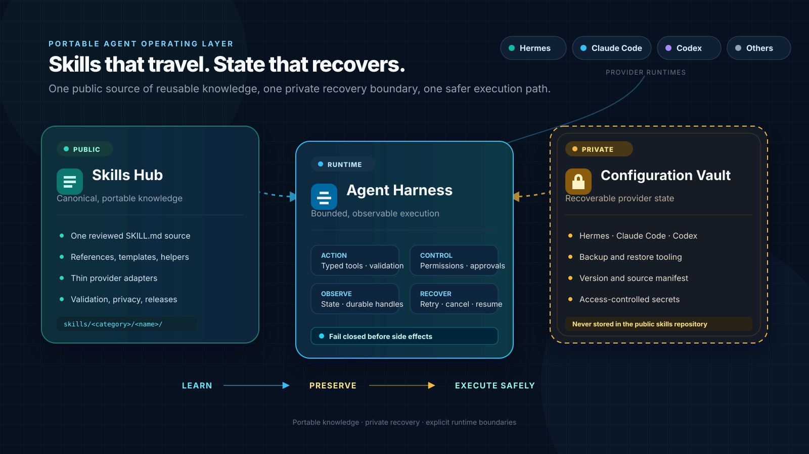

Project Architecture¶
The project treats agent portability as three connected problems: reusable knowledge, recoverable private state, and safe execution.

Skills Hub¶
Public and portable. The canonical skills/ tree stores reviewed workflows once, while adapters connect provider-specific discovery mechanisms and supply genericized global templates.
- versioned skill packages;
- references, templates, and helpers;
- runtime-neutral global instruction base and lifecycle hooks in
adapters/shared/; - per-runtime wiring templates in
adapters/claude/andadapters/codex/; - privacy-aware promotion through pull requests;
- validation and release gates.
Configuration Vault¶
Private and recoverable. A separate vault preserves the real configuration overlay and a restore manifest without weakening the public boundary.
- employer conventions, project trust lists, credentialed MCP servers, private skills;
- machine-specific Hermes, Claude Code, and Codex configuration;
- the overlay merged over the public templates at install time;
- backup and restore tooling;
- repository URL, exact revision, and dirty-state manifest;
- encrypted or access-controlled secret storage.
Agent Harness¶
Bounded and observable. The harness turns skills into safe runtime behavior by controlling the tools and feedback exposed to an agent.
- typed operations and fail-closed validation;
- least-privilege permissions and approval gates;
- deterministic observations and durable handles;
- cancellation, retries, recovery, and audit evidence.
Trust Boundaries¶
The three layers cooperate, but they do not share the same publication or security policy.
| Data | Public Skills Hub | Private Vault | Runtime Harness |
|---|---|---|---|
| Portable workflows and generic references | Yes | Optional manifest reference | Read-only consumption |
| Provider connection instructions | Sanitized examples only | Full private configuration | Loaded at runtime |
| Global instruction base, hook scripts, settings and subagent definitions | Genericized templates only | Real overlay values | Merged result loaded at runtime |
| Employer identifiers, project trust lists, machine paths, pinned personal model choices | Never | Owned here | Applied at runtime |
| Credentials and private keys | Never | Encrypted/access-controlled | Injected without model-visible logging |
| Memories, chats, sessions, runtime databases | Never | Backup only when explicitly selected | Scoped runtime access |
| Tool schemas and safety contracts | Yes | Not required | Enforced |
The vault is not a directory inside this repository
A public clone, Git history, release artifact, or documentation build must never contain raw agent-home snapshots, credentials, memories, transcripts, or private runtime state.
Publishing a global adapter template does not relax this. A template is derived from a real setup by removing everything specific to it; it is never a copy of one. scripts/validate_repo.py mechanically rejects machine home paths, local secret-store paths, forbidden state filenames, private state directories, and symlinks, but a passing validator is not a substitute for reading the diff.
Lifecycle¶
flowchart LR
A[Learn from completed work] --> B[Review and sanitize]
B --> C[Publish portable skill]
C --> D[Load through provider adapter]
V[Restore private configuration] --> D
D --> E[Execute through harness]
E --> F[Observe and verify]
F --> A
subgraph Public[Public repository]
B
C
end
subgraph Private[Private boundary]
V
end
subgraph Runtime[Runtime boundary]
D
E
F
endThis creates a controlled feedback loop:
- Learn from real work.
- Sanitize and review the reusable lesson.
- Publish it once in the hub.
- Preserve private provider state separately.
- Execute safely through a bounded harness.
- Verify results before the next lesson is promoted.
Current Repository Scope¶
This repository implements the public skills hub, provider adapters including genericized global templates, validation/synchronization tooling, and reusable harness-design guidance. The private overlay and configuration vault is an architectural companion, not a public package shipped here. A merging installer for the templates is planned and not yet shipped.
Use these entry points:
- Quick Start — connect Claude Code, Codex, or Hermes.
- Decision Records — why the global-adapter boundary moved.
- Skill Catalog — browse the portable workflows.
- How to Use These Skills — understand provider discovery and adapter behavior.
agent-harness-design— design safe tool and observation contracts.agent-knowledge-lifecycle— maintain the public/private knowledge boundary.